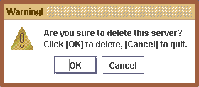

You could simply create add any computer to the "Server List", which will be saved to a local XML file. And when you want to perform an operation on the target computer, you could then simply select it from the server list as shown below:
Create New Server
-
First, go to the top menu bar, select "Configure" -> "Server List", this will open up the following window.
- Click the "Create" button.
-
Simply input the required information, note that all of the fields are mandatory and must be filled in,
otherwise the new record can't be saved.
- Click "Reset" to clear all the fields.
- Click "Save" to save the new record and proceed with the creation of next computer on a new window.
- Click "Save & Close" to save the record and quit the window.
You could also modify any existing record whenever changes are required.
Modify Existing Server
-
From the server list window, select your target server first, then click the
"Modify" button.
-
You could then update any of the information, note that all of the fields are mandatory and must be filled in,
otherwise the new record can't be saved.
- Click "Reset" to reset all the modification to original value.
- Click "Save & Close" to save the record and quit the window.
Lastly, you could delete any server which is obsolete.
Delete Existing Server
-
From the server list window, select your target server first, then click the
"Delete" button.
-
There will be a warning message, which requires your confirmation before deleting the
record from the server list.
 - Click "OK" to proceed deletion.
- Click "Cancel" to abort the deletion.
Related Topics:
|
|
Copyright 2005 ?RMIAdmin. All rights reserved. |